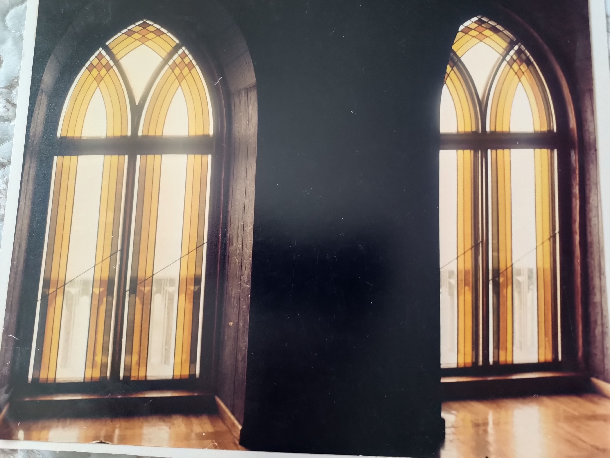
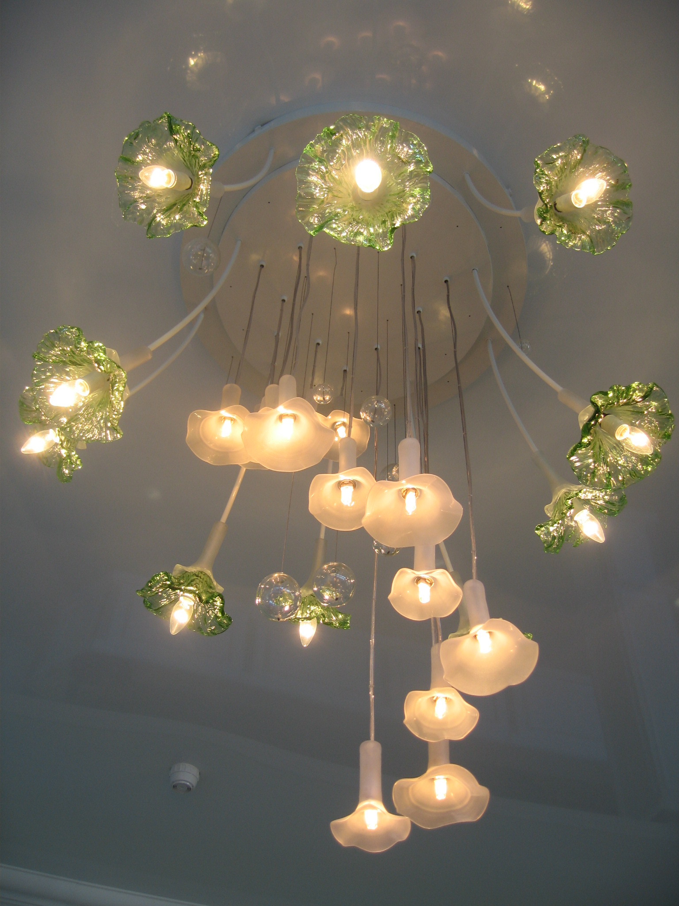
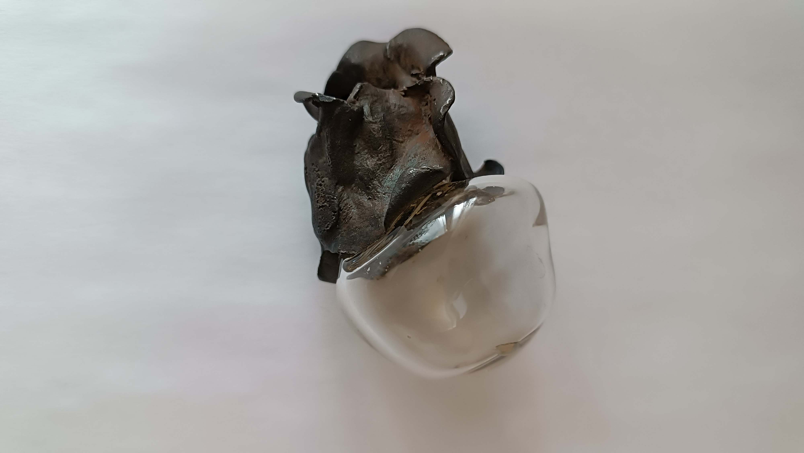
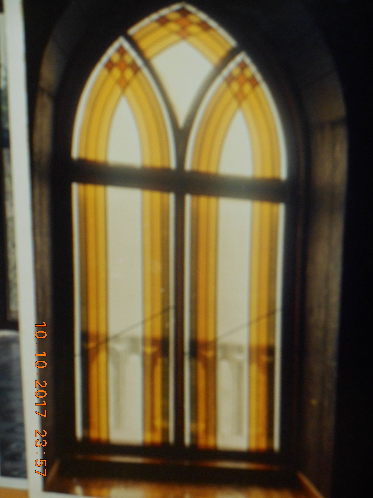
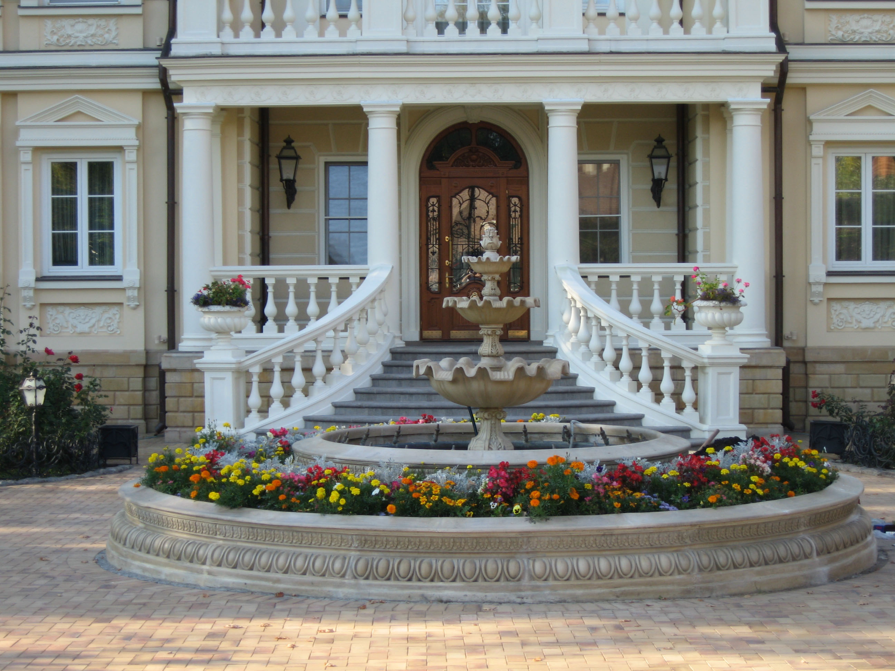

Роспись
Живопись на стенах, потолках и сложных архитектурных поверхностях

Тамара Владимировна Сандомирова — художник-монументалист, руководитель проектов
Обсудить проектМонументально-декоративные решения, интегрированные в архитектуру пространства
Живопись на стенах, потолках и сложных архитектурных поверхностях

Долговечные фактурные панно из смальты, камня, стекла

Световые акценты и зонирование через авторское стекло

Серии декоративных элементов для единого стиля пространства

Арт-объекты, интегрированные в архитектуру и освещение
Как руководитель проекта я отвечаю за каждый этап: концепцию, подбор и исполнение в материале, координацию исполнителей, контроль сроков и приёмку результата. Вы получаете предсказуемый результат в согласованные по каждому этапу сроки — без потери контроля над бюджетом.
Погружение в архитектуру пространства, эскиз и согласование идеи
Подбор долговечных материалов, координация узкопрофильных исполнителей и смежников
Контроль графика, прозрачная отчётность, финальная приёмка объекта

Эскиз, мудборд, привязка к архитектуре

Образцы фактур, согласование бюджета

Координация мастеров, строителей, электриков

Контроль качества, сдача объекта в срок
Проекты для частных и общественных пространств — нажмите на работу, чтобы узнать подробнее
Есть похожая задача? Расскажите о ней — подготовлю предложение.

Тамара Владимировна Сандомирова
Я отвечаю за каждый этап лично — от первого эскиза до финальной приёмки. Это гарантирует целостность замысла и предсказуемый результат для заказчика.
Работаю с общественными и частными пространствами: от локальных акцентов до масштабных монументальных программ. Член Московского Союза художников.



Расскажите о цели, задачах, площади и сроках. Приложите вспомогательные файлы — подготовлю предложение.
Тамара Владимировна Сандомирова
Художник-монументалист · руководитель проектов
Тел: +7 (900) 000-00-00
Email: info@example.ru
Telegram · WhatsApp — уточнить контакты